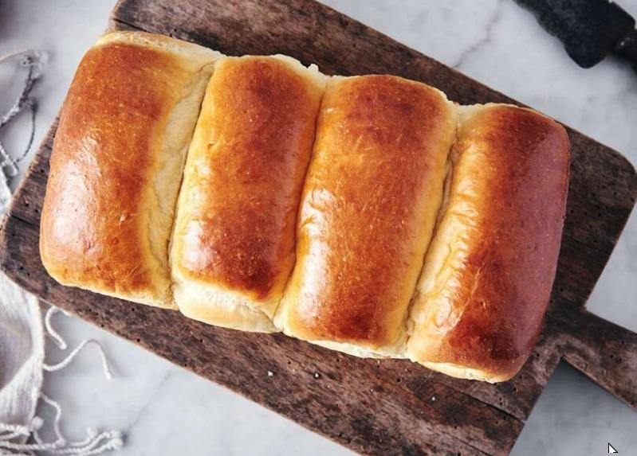

milk bread

hhhng, this and sourdough really take are my favorite breads. (japanese) milk bread is light and fluffy, airy almost, and a little sweet. the texture is feathery and all around just lovely to eat.
i absolutely adore this bread (especially considering how little preparation and effort it takes) and i hope you do too!
ingredients
tangzhong
dough
- bread flour
- nonfat dry milk (or more milk with a 1:1 ratio)
- graunlated sugar
- salt
- instant yeast
- milk
- one egg
- unsalted butter, melted
steps
- mix all the tanzhong ingredients and heat on low heat until thick, about three to five minutes. let cool
- mix all the dough ingredients until a smooth, elastic dough forms.
- shape the dough and let rest for sixty to ninety minutes
- gently deflate the dough and divide into four equal pieces
- flatten each piece in a five by eight rectangle and fold the ends in like a letter. flatten again, then roll into a log
- place your four logs into a lightly greased pan
- let proof for forty to five minutes, until puffy
- brush the bread with milk and let bake at 350 for thirty to thirty-five minutes.
- let cool, and enjoy :))